Monocular depth estimation remains challenging, as foundation models such as Depth Anything V2 (DA-V2) struggle with real-world images that are far from the training distribution.
We introduce Re-Depth Anything, a test-time self-supervision framework that bridges this domain gap by fusing foundation models with the powerful priors of large-scale 2D diffusion models. Our method performs label-free refinement directly on the input image by re-lighting the predicted depth map and augmenting the input. This re-synthesis method replaces classical photometric reconstruction by leveraging shape from shading (SfS) cues in a new, generative context with Score Distillation Sampling (SDS). To prevent optimization collapse, our framework updates only intermediate embeddings and the decoder's weights, rather than optimizing the depth tensor directly or fine-tuning the full model.
Across diverse benchmarks, Re-Depth Anything yields substantial gains in depth accuracy and realism over DA-V2, and applied on top of Depth Anything 3 (DA3) achieves state-of-the-art results, showcasing new avenues for self-supervision by geometric reasoning.
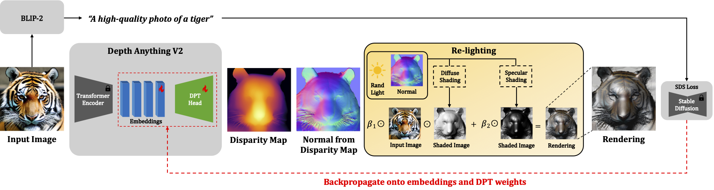
Our main contribution is the re-lighting module, which randomizes light conditions and shades the estimated geometry on the input. Notably, the re-lighting does not need to look physically accurate, as we are only augmenting the image, not photometrically reconstructing it.
Key is also the optimization of the embeddings and decoder, while leaving the encoder frozen.
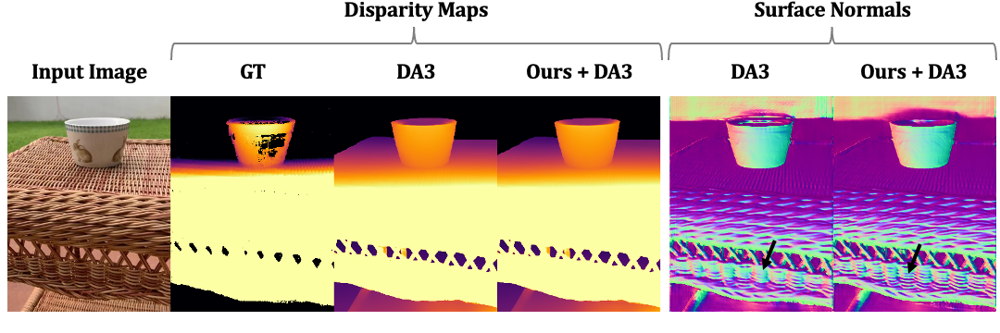
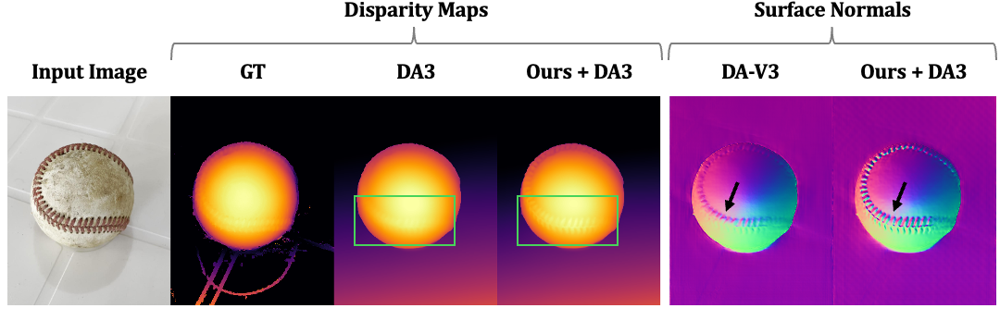
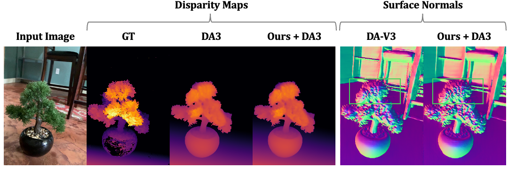
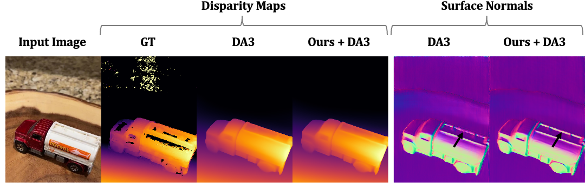
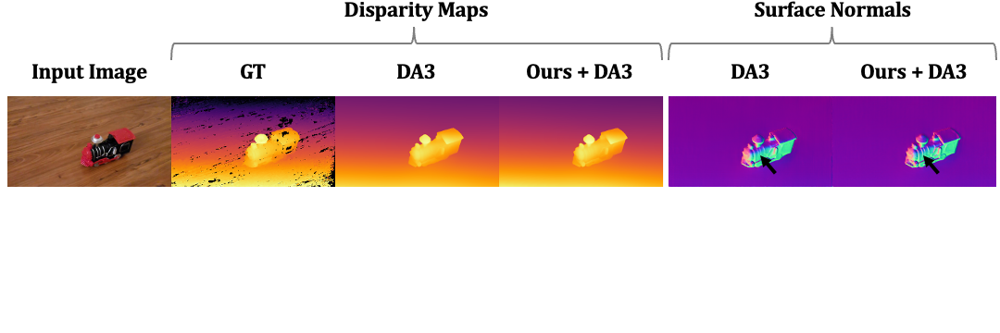
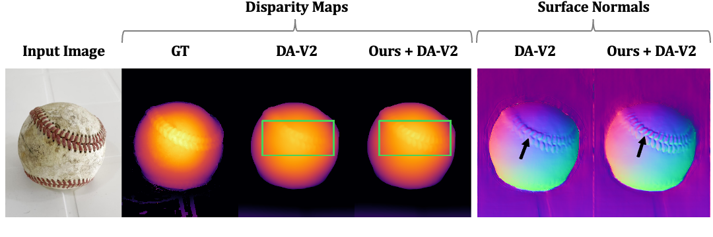
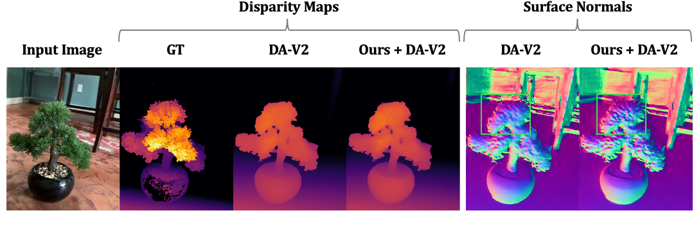
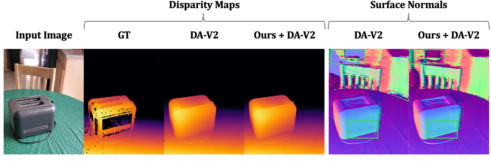
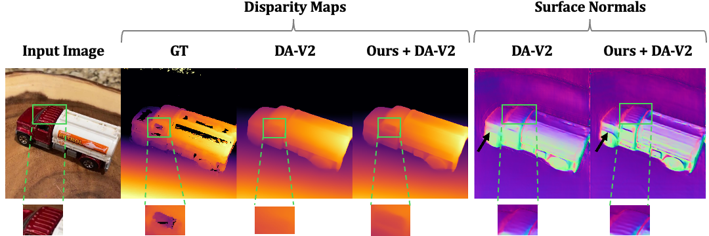
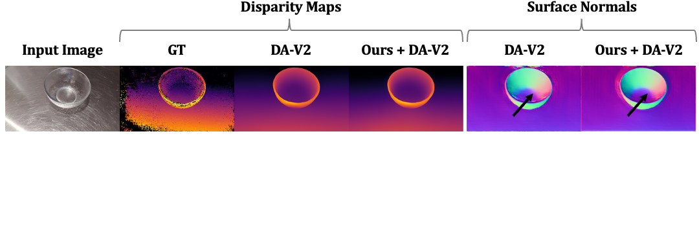
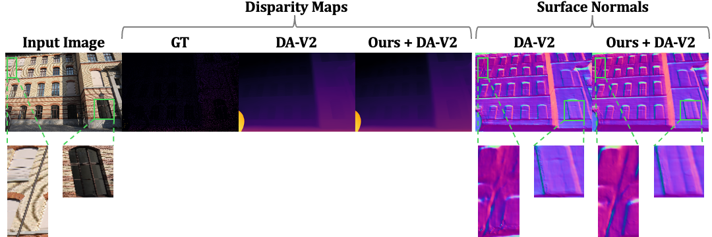
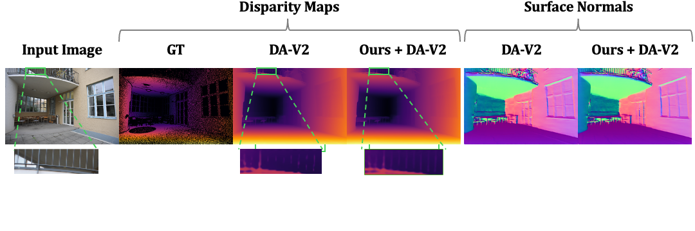
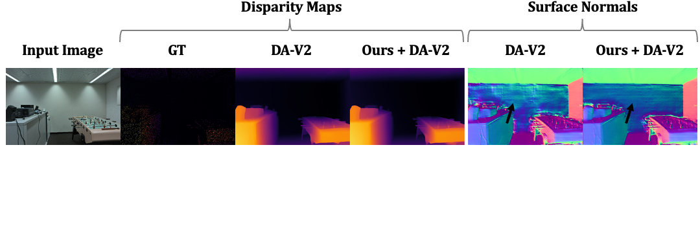
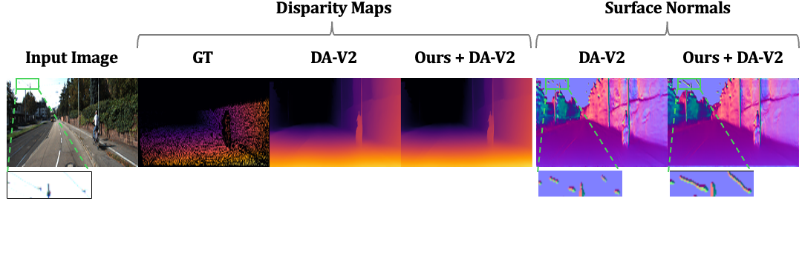
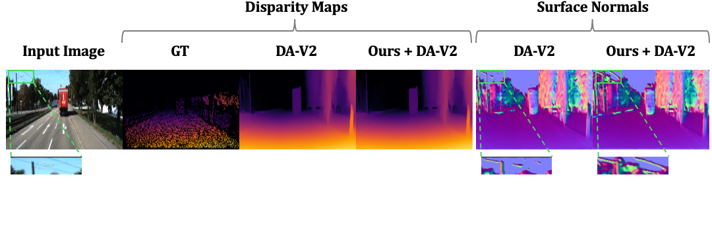
Comparison against DA3 across datasets. Normal MSE is calculated from spatial depth gradients over pixels with valid neighboring depth values.
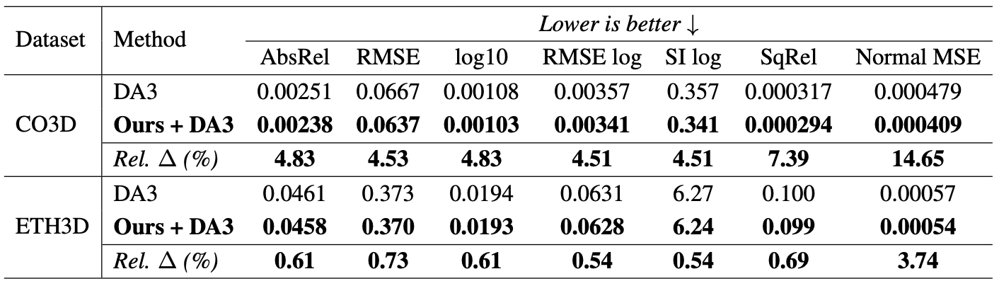
Comparison against DA-V2 across datasets. Relative error reduction of Ours over DA-V2 is shown in the last row of each dataset.
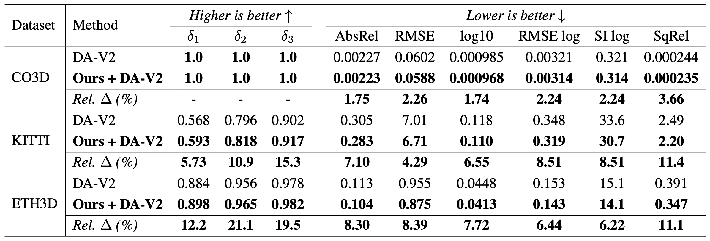
Our work builds on top of amazing papers and codebases. Please check out
Depth Anything V2 a SOTA monocular depth estimator.
Depth Anything 3 a model that predicts spatially consistent geometry from arbitrary visual inputs, with or without known camera poses.
threestudio a unified framework for 3D content creation from text prompts, single images, and few-shot images, by lifting 2D text-to-image generation models.
Hugging Face a platform that provides libraries for many machine learning tasks like text generation, image generation, and many more.
@article{bhattarai2025redepth,
title={Re-Depth Anything: Test-Time Depth Refinement via Self-Supervised Re-lighting},
author={Ananta R. Bhattarai and Helge Rhodin},
journal={ArXiv},
year={2025},
volume={abs/2512.17908}
}